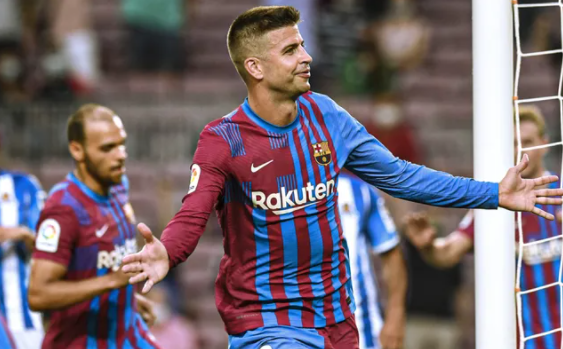

|  |
Gerard Piqué BernabeuPique grew up in Barcelona's youth clubs, and in 2004 he moved to Manchester United, and was loaned in 2006 to Real Zaragoza for one year, before returning in 2008 to Barcelona. In his first season with Barcelona, he won all the 6 tournaments he participated in with his club, and is one of four players to win the European Champions League two years in a row with different teams, with Marcel Desaillier, Paulo Sousa and Cameroonian Samuel Eto'o. |
|---|